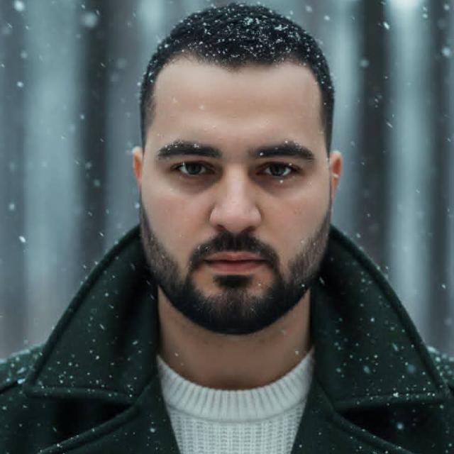

IT & Technical Support
- Technical support and customer service
- Working with computers and networks
IT Technician
Over 10 years of experience with international and local organizations in leadership, management, and field roles—across humanitarian programs, data work, and IT support.

Technical knowledge combined with field experience
A humanitarian and IT professional with over 10 years of experience working with international and local organizations in leadership, management, and field roles. Experience spans electronic cash and voucher assistance; Water, Sanitation and Hygiene (WASH); food security; non-food items (NFIs); nutrition; and protection, including child and women's protection. Additional strengths include data analysis, digital form design, monitoring and evaluation, community coordination, technical support, and computer networks.
10+ Years · Humanitarian Response · ITProfessional fields and responsibilities
Practical tools and capabilities
Professional courses and certificates
Communication in Arabic, Turkish, and English